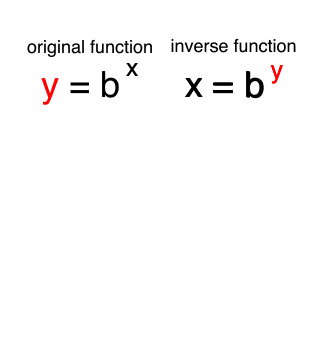

Elliptical Curves Demo
Simple Introduction on Elliptical Curves
Introduction to the Discrete Log Problem
What is Logarithm?
In mathematics, the logarithm is the inverse function to exponentiation. That means the logarithm of a given number x is the exponent to which another fixed number, the base b, must be raised, to produce that number x. In the simplest case the logarithm counts repeated multiplication of the same factor; e.g., since 1000 = 10 × 10 × 10 = 103, the "logarithm to base 10" of 1000 is 3. The logarithm of x to base b is denoted as logb (x) (or, without parentheses, as logb x, or even without explicit base as log x, when no confusion is possible). More generally, exponentiation allows any positive real number to be raised to any real power, always producing a positive result, so the logarithm for any two positive real numbers b and x where b is not equal to 1, is always a unique real number y. More explicitly, the defining relation between exponentiation and logarithm is: logbx=y.
logab is not an integer:
Let log23=x, therefore 2x=3, i.e. x ≈1.58496.
Discrete Logarithm Problem Properties:
We look at the set Zp*={1,…, P-1}, where P is an odd prime number.
Notation: α-β=(αβmodP); α,β ϵ Zp*.
Properties of :
- If α,β ϵ Zp*, then α.β = β.α ϵ Zp*, i.e. Closure Property.
- If α,β,γ ϵ Zp*, then α.(β.γ)=(α.β).γ, i.e. Associative Property.
- If α ϵ Zp*, then 1.α=α, i.e. Zp*has an identity element.
- If α ϵ Zp* and β ϵ Zp*, such that α.β=1, then every element in Zp* has an inverse.
Any collection G with an operator “.” That satisfies the above 4 conditions is called a Group.
What is Cyclic Group?
Let us consider an example: (Z11*,.) -> Z11* = {1,2,3,…,10}, let α = 2, now checking the values for α, α2, α3, …, α10. All the values of α will be covering all values in Z11* once. Now at α11, α12,…, α∞ the sequence will repeat, making it cyclic wave and cover all number. Therefore, α =2 is a generator of Z11*.
Definition: We say that α ϵ Zp* is a generator if { α, α2,…, αp-1} = Zp* i.e. Zp*={1,2,…,p-1}. In this case, we call (Zp*,.) a cyclic group.
To find if α ϵ Zp* is a generator, we use the following theorem.
Theorem: α ϵ Zp*is a generator of Zp* if and only if α(p-1)/q ≠ 1 mod p for all primes q such that q/(p-1). Where q is prime division of P-1.
Let α be a generator of Zp* = { α, α2,…, αp-1}. Since αp-1 = 1 as per Fermat’s Little Theorem i.e. αp-1 ≡ 1 mod p. Therefore, Zp* = { 1, α, α2,…, αp-2}.
If β ϵ Zp*, then β = αx
If β ϵ Zp*, then β = αx for some unique 0<=x<=p-2 i.e. x is called the discrete logarithm of β to base α.
Logα β = x ⇔ αx= β ϵ Zp*
Definition: The discrete Logarithmic problem in Zp*
Given:
- P is an odd prime number.
- α is a generator of Zp*.
- β ϵ Zp* = {1,2,...,p-1}.
Finding the integer x ϵ {0,...,p-2}, such that αx≡β mod p or finding Logα β.
If P is "large" and α is a generator of Zp*, then finding Logα β is an "intractable" problem. The security of many cryptography techniques depends on these followings:
- Diffie-hellman key agreement.
- Elgamal Encryption.
- Elgamal Signature Scheme.
Visualisation
This is an interactive demonstration of the fact that discrete logarithm problem is not that easy to solve. You have a curve and generated points P, Q. Try to manually find n such as Q=nP.Line equation: $y^2 = x^3 + ax + b$